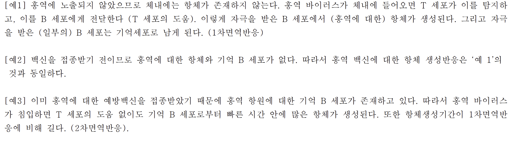

해설 2
면역반응과 항체 생성

[예1] 홍역에 노출되지 않았으므로 체내에는 항체가 존재하지 않는다. 홍역 바이러스가 체내에 들어오면 T 세포가 이를 탐지하고, 이를 B 세포에게 전달한다 (T 세포의 도움). 이렇게 자극을 받은 B 세포에서 (홍역에 대한) 항체가 생성된다. 그리고 자극을 받은 (일부의) B 세포는 기억세포로 남게 된다. (1차면역반응)
[예2] 백신을 접종받기 전이므로 홍역에 대한 항체와 기억 B 세포가 없다. 따라서 홍역 백신에 대한 항체 생성반응은 '예 1'의 것과 동일하다.
[예3] 이미 홍역에 대한 예방백신을 접종받았기 때문에 홍역 항원에 대한 기억 B 세포가 존재하고 있다. 따라서 홍역 바이러스가 침입하면 T 세포의 도움 없이도 기억 B 세포로부터 빠른 시간 안에 많은 항체가 생성된다. 또한 항체생성기간이 1차면역반응에 비해 길다. (2차면역반응).